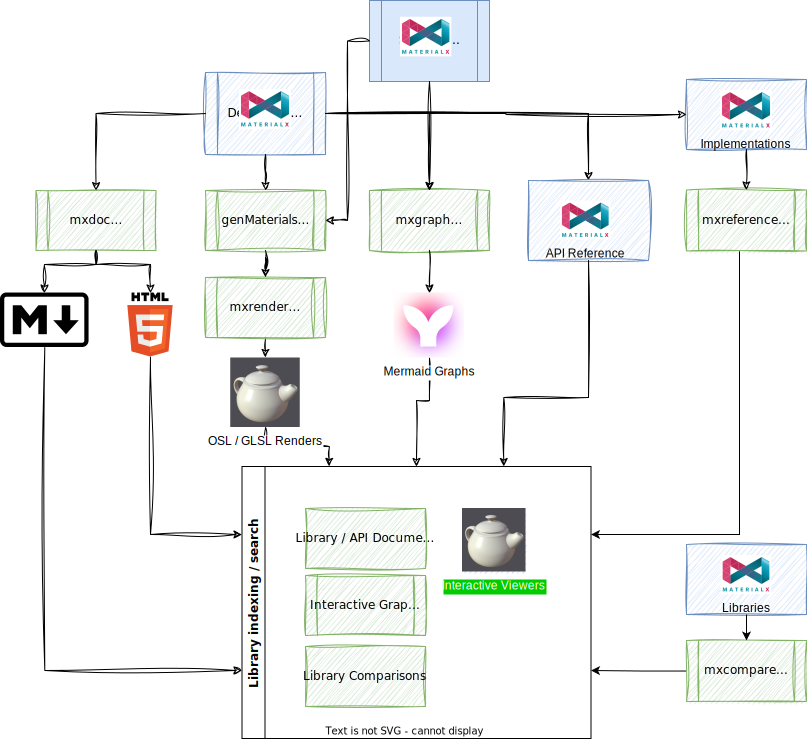
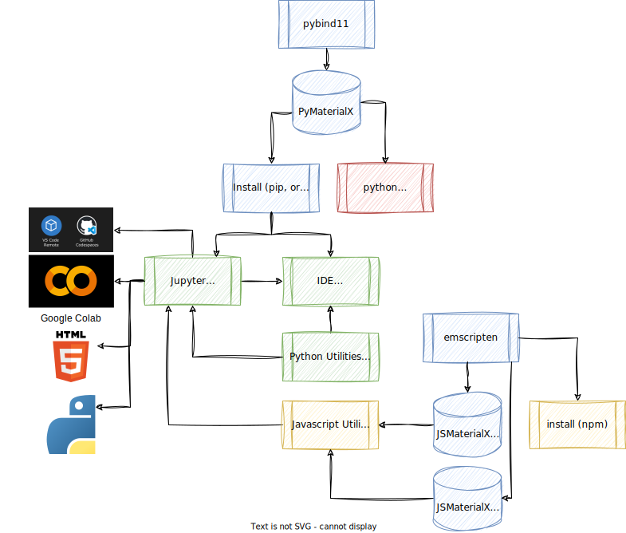

Insight into how this site was generated is shown here to demonstrate how a user can enhance documentation and learning workflows for MaterialX by adding tools on top of MaterialX itself. The following color coding is used in the diagrams provided:
Note that something like 'Doxygen' was tried but not used as it was not flexible enough to generated the customizations required of an shader node library. One alternative was to generate actual C++ or Python classes for node definitions and run Doxygen. This is a possible project but is not being pursued at the current time.
The following diagram outlines the setup for generating documentation from MaterialX. The main utilities were written using the Python wrappers for MaterialX:
Dependents such as 'Bootstrap', 'Mermaid' 'model-viewer', and 'Google Fonts' are automatically included.

A number of Javascript utilities were written to handle:
For API learning, the setup is shown below, with the ability to host interactive tutorials and utilities using MaterialX either: via Jupyter notebooks and directly on via Web pages.
Executable notebooks have been exported to both HTML and Python for availability for off-line usage. HTML references are accessible under the "Examples" menu, and Python examples via the site's Github repository.
Local interactive sessions can run using these notebooks currently. ability to host remotely via Google Colab, VSCode / Github code spaces.
Interactive utilities are use the Javascript MaterialX "core" and "shader generation" modules. The former smaller module is available online starting with version 1.38.9.
Possible future tracks that folks could explore include: interactive Python on Web pages, and Jupyter notebooks using Javascript (using Node.js).
